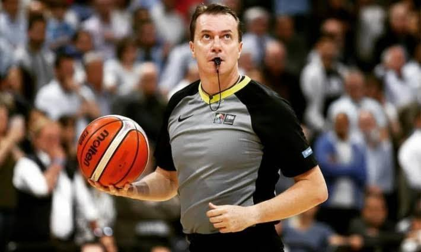

Principais regras
O objetivo é marcar mais pontos que a equipe adversária, arremessando a bola na cesta.
Pontuação
- 1 ponto: lance livre convertido.
- 2 pontos: arremesso dentro da linha de três pontos.
- 3 pontos: arremesso feito atrás da linha de três pontos.
Infrações comuns
- Andada: deslocar-se segurando a bola sem driblar corretamente.
- Dois dribles: voltar a driblar após encerrar um drible e segurar a bola.
- Falta pessoal: contato físico ilegal com um adversário.
- Regra dos 24 segundos: a equipe deve tentar um arremesso dentro desse limite, conforme as regras aplicáveis.

As regras podem variar um pouco entre competições, como FIBA e NBA.